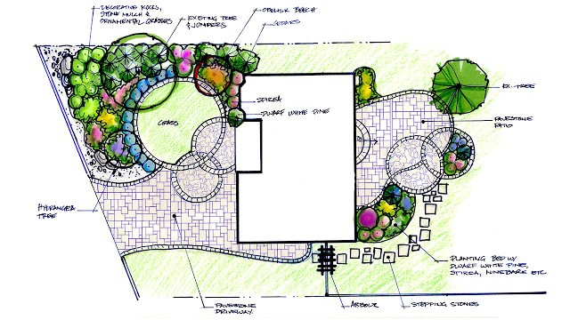

اللاندسكيب
ببساطة هو تنسيق وتجميل الموقع ينقسم إلى هارد سكيب وسوفت سكيب، الهارد سكيب يشمل أعمال : تسوية الأرض - البردورات - المشايات - البرجولات - البحيرات - الشلالات - النوافير - الإضاءة - شبكات الكهرباء والرى .
السوفت سكيب يشمل أعمال : الزراعة بصفة عامة ( الأشجار - الشجيرات - الأسيجة - المتسلقات - المزهرات - المسطحات الخضراء - ..... إلخ ).
يبدأ اللاندسكيب أولاً بأعمال الرفع المساحى ( أبعاد الأرض والطبوغرافية الخاصة بها) مرتفعات - هضاب - منخفضات ....إلخ ) باستخدام أدوات ومعدات الرفع المساحى وخاصة جهاز التوتال ستيشن Total station ويقوم بهذا العمل مهندسين متخصصين فى المساحة ويعاونهم مساعدين
ثم يقوم مهندسين متخصصين فى أعمال تصميم اللاندسكيب ( عادة مهندسين معماريين ) يجيدون إستخدام برامج الأوتوكاد والفوتوشوب بعمل تصميم تصورى للموقع لعرضه على المالك لإبداء ملاحظاته .
بعد الموافقة على التصميم يقوم مهندسى المساحة بتوقيع الرسومات الموجودة بالتصميم على أرض الواقع.
تبدأ أعمال الهارد سكيب أولاً مع مراعات تمديد سليفات ليمر منها شبكات الرى الخاصة بالزراعة .بعد فترة يبدأ تداخل عمل السوفت سكيب وعادة ما يبدأ بزراعة النخيل الضخم والأشجار الكبيرة وفى نفس الوقت يقوم مهندس الرى بتوصيل الشبكات أولاً بأول لكل ما يزرع
بعد ذلك يعمل الجميع فى نفس الوقت ( هاردسكيب - سوفت سكيب ) لإنهاء المشروع .وعادة ما يستمر السوفت سكيب لمدة سنة قبل تسليم المشروع لمراعاة المزروعات وصيانتها حتى تبدو جميلة وخلابة .
عادة ما يعمل بمجال اللاندسكيب مهندسين من تخصصات مختلفة مثل :-
المدنى - المعمارى - الكهربا - إلكتروميكانيكال - المساحة - الرى - الزراعة - المكتب الفنى .
جيش جرار من المساعدين والعمال .
قائدى المركبات الثقيلة ( اللودر - البامب - البوب كات - الفورك لفت .... إلخ. (
القواعد العامة لتصميم وتخطيط الحدائق
محور التصميم Design axis
هو الخط الوسطى الذى يقسم الحديقة ( فى التصميم الهندسي المتناظر ) الى نصفين متماثلين يكون كل منهما صورة مرآة للآخر.
وفى التصميم الطبيعى الغير متناظر يمكن عمل محور اساسى لكنه يكون غير متناظر و عادة يوجد فى اى تصميم محور واحد مهم (يعرف بالمحور الاساسى او الرئيسى ) و محاور اخرى اقل اهمية و قد يوجد احيانا اكثر من محور رئيسى فى درجة واحدة من الاهمية و ذلك فى الحدائق كبيرة المساحة.
و المحاور خطوط وهمية تمر عادة وسط الطرق و المشايات او تخترق المسطحات الخضراء لتصل كل منها بين نقطتين هامتان.
ولأهمية المحور الاساسي فى التنسيق فإنه يجب العمل على تقويته و اظهاره و ذلك بخلوه من اى عائق يحجب خط النظر عن الوصول الى نهايته , فلا تزرع عليه اشجار و لا تقام عليه منشآت تحجبه , كما يجب ان تكون المحاور الثانوية اقل عرضا و طولا منه.
ويفضل ان يكون تقابل المحور الرئيسى مع المحاور الثانوية فى زاوية قائمة فى التنسيق الهندسي، و عادة تتخذ الطرق كمحاور اساسية الا انها يمكن ان تمتد عبر حوض مائي او شريط طويل من المسطح الاخضر او حوض من النباتات العشبية المزهرة القصيرة ليظل دائما مفتوحا امام خط البصر.
فى الحدائق المنزلية يتخذ عادة الخط الذى يمر بمنتصف مدخل الحديقة ومنتصف مدخل المنزل محورا اساسيا و المحاور الاخرى ثانوية .. لكن فى التنسيق الطبيعى يكون المحور الاساسي عادة هو الخط الذى يصل بين اهم نقطتين من المنزل الى الحديقة.
وبتصميم المحاور يمكن تحديد مواقع الطرق و المشايات و تحديد بقع الحديقة المهمة و التى يجب ان تختار لها شئ معين ملفت للنظر . ففى الحدائق الهندسية يختار لها مثلا نافورة او حمام طيور او مقعد مميز كتقوية لهذه النقطة.
اما فى الحدائق الطبيعية فيختار لها احد المنشآت السابقة أو مجموعة مميزة من النباتات , على ان يراعى التناسب بين اهمية المحاور والمنشآت التى تنتهى اليها، فمثلا ينتهى المحور الرئيسى بمنشأة اكبر حجما و اهمية من المنشآت التى تنتهى اليها المحاور الثانوية.
الوحدة Unity
يجب ان يكون اساس التصميم فكرة واحدة محددة لتظهر الحديقةو المنزل كوحدة واحدة و لذلك يجب ان يعمل كل عنصر من عناصر التصميم فى بساطة على ان يبرز هذا المعنى.
البساطة Simplicity
إذ يجب ان تكون الحديقة بسيطة خالية من المغالاة و التعقيد , ففى الحدائق صغيرة المساحة يقتصر على اختيار عدد قليل من النباتات مع استعمال عدد كافى من كل نوع لتبدو الحديقة بسيطة – اما فى الحدائق كبيرة المساحة حيث تتعدد اجزائها فيجب فصل كل جزء عن الاخر لتفادى التعقيد فى المنظر الواحد خاصة فى الاجزاء المكشوفة من الحديقة.
التناسب و التوازن Proportion and balance
يقصد بالتناسب ان تتناسب محتويات الحديقة مع مساحتها و شكلها و الغرض من انشائها و الظروف المحيطة بها فتكون الطرق ضيقة و احواض الازهار قليلة فى الحدائق الصغيرة لتبدو اكثر اتساعا , كما يجب ان تتناسب احجام الاشجار و الشجيرات مع حجم الحديقة.
كذلك يجب ان تتناسب فكرة التصميم مع المناظر المحيطة بالحديقة و محاولة ادخالها فى الفكرة .. فمثلا لو كان قريبا من الحديقة نهر كبير فلا يلزم فى التنسيق عمل بركة صناعية و انما تدمج الحديقة مع المناظر الطبيعية المحيطة بها دون الاخلال بعناصر التناسب والوحدة والبساطة.
أما التوازن فيقصد به ترتيب محتويات الحديقة فى اجزائها المختلفة بشكل متوازن خصوصا حول المحاور , حيث ترتب احواض الزهور و توزع النباتات فى الحدائق الهندسية بتكرار الاشكال و النباتات المتشابهة و الالوان اما فى التنسيق الطبيعى فيتحقق التوازن بوضع كتل نباتية غير متساوية على جوانب المحاور بطريقة تلفت النظر اليها بشكل متكافئ إذ ليس من الضرورى التشابه فى الشكل و الحجم و اللون او حتي طبيعة النمو كالمطلوب فى التنسيقات الهندسية , و لكن يمكن هنا الحصول على التوازن بين اشياء غير متشابهة فمثلا استعمال تمثالا فى ناحية من الحديقة يمكن ان يتوازن مع نافورة بنفس الحجم تقريبا فى الناحية الاخرى , و هذه طريقة تشعر بالتوازن و لكن بشكل غير متماثل.
و تنطبق هذه القاعدة على النباتات ايضا حيث يمكن لشجرة مرموقة فى جانب من الحديقة (كشجرة عيد الميلاد) ان يوازيها فى الجانب الاخر و ليس على نفس البعد تماما من المحور مجموعة من الشجيرات ( كالتويا و الكماسيبارس و التاكسوس ) المهم ان يتساويا فى قوة لفت النظر اليهما كما يمكن ايضا استعمال الالوان المختلفة للنباتات كعامل من العوامل التوازن بالحديقة.
الأشجار المستخدمة في تصميم وتنسيق الحدائق
الأشجار
نباتات خشبية كبيرة الحجم يزيد ارتفاعها عن 3 م ، ولها جذع واضح يخلو من الأفرع الجانبية لعدة أمتار ، ولها تاج ( قمة ) محددة الشكل.
وهى تزرع اما كنماذج منفردة ( كشجرة عيد الميلاد ، الصنوبر ، العرعر ، الجميز ، النبق ، المانوليا ) أو فى مجموعات ( منتظمة بالحدائق الهندسية كالمخروطيات - أو غير منتظمة بالحدائق الطبيعية كمجموعة من انواع الفيكس المختلفة أو مجموعة من اشجار النخيل). وقد تزرع للحصول على الظل ( مثل : الفيكس ، البوانسيانا ، أبو المكارم ، المانوليا ، الجميز ، النبق) أو كمصدات للرياح ( مثل : الكافور والكازورينا ) أو كستائر نباتية عازلة تخفى بعض المناظر غير المرغوبة ( مثل : السرو ، الحور ، الكافور ، الميلالوكا ، المانوليا ) . كما تستخدم الأشجار المتهدلة ( كالصفصاف والتاكسوديم والفلفل بورق رفيع ) لتنسيق الحدائق المائية والزراعة على حواف الترع ، أما الأشجار المزهرة ( مثل : البوانسيانا وخف الجمل والجكرندا ، والبومبكس) فتزرع لتعويض نقص الأزهار بالحدائق.
نقل الأشجار
يفضل نقل الأشجار متساقطة الأوراق ملشا" ( بدون صلية ) الى المكان المستديم قبل بدء نمو البراعم مباشرة وذلك فى أوائل الربيع - أما الأشجار التى يتأخر بدء نشاطها مثل السرسوع والفيكس والبونسيانا والجكرندا فيؤخر نقلها الى أبريل ، والكاسيا نودوزا الى مايو . أما الأشجار مستديمة الخضرة فتنقل بصلايا فى أى وقت من السنة ، ويفضل الربيع والخريف حيث الجو المعتدل .
زراعة الاشجار فى المكان الستديم :
تعمل حفرة يكون حجمها أكبر من حجم المجموع الجزرى للشجرة وبمقدار يسمح باعادة التراب الناتج من الحفر حول الشجرة مرة أخرى وكبسها حولها لزيادة تثبيتها. عندما تكون التربة فى المكان الذى ستزرع فية الأشجار غير جيدة تحفر حفرة كبيرة ( 1 * 1 * 1 م ) وتوضع فيها تربة جيدة أو مخلوط الطمى والسماد البلدى القديم المتحلل بنسبة ( 5 : 1 ) تزرع الأشجار متساقطة الأوراق بأن توضع رأسية فى مركز الحفرة ، ويفضل أحيانا تكويم جزء من التربة الناتجة من الحفر على هيئه هرم فى وسط الحفرة ليكون المجموع الجزرى للشجرة المنقولة على قمة هذا الهرم ثم توزع الجذور بشكل منتظم ومريح على جوانب هذا الهرم ثم الردم . ويفضل زراعة الأشجار على مستوى أقل بحوالى 5 سم من الذى كانت عليه فى المشتل وأن تكون الجذور القوية ممتدة فى الجهة التى تهب منها الرياح بالمنظقة لتساعد النبات على مقاومة تأثير حركة الرياح . تكبس التربة حول الجذور جيدا" وتملأ الحفرة بالماء . وفى اليوم التالى يكمل ملأ الحفرة بالتربة ( بعد هبوطها ) ويسوى سطحها وتروى .
تحتاج أغلب الأشجار المتساقطة لدعامات تثبت رأسيا" بجانبها عند الزراعة لمنع الرياح الشديدة من خلخلتها ولضمان نموها مستقيمة - يفضل وضع الدعامة فى الجهة المقابلة للجهة التى تهب منها الرياح مع ربط الأشجار الى الدعامة بالسلك جيدا" بعد لف الجذع بالخيش أو قطعة من البلاستك .
اما الأشجار المستديمة فتزرع بوضع صليتها فى مركز الحفرة على مستوى أقل قليلا من التى كانت عليه بالمشتل ( دون ازالة الخيش أو الصفيحة المنزرعة بها ) ويهال عليها التراب الناتج من الحفر ويدك حول الصلية ثم الرى . بعد تشرب التربة بالماء فانها تهبط قليلا" . تكمل الحفرة بالتراب ويسوى سطحها ثم تروى . قد ينصح برش المجموع الخضرى بالماء صباحا" ومساءاً لمدة شهر .
وعادة تدهن سيقان الأشجار المنقولة بدهان أبيض ( محلول جيرمثلا" ) و تغطى بالخيش حتى بداية التفريع لحمايتها من تأثير أشعة الشمس المباشرة والتى قد تشجع دخول الحشرات الثاقبة . ويراعى أن يكون الرى غزير دون أن تعرض النباتات المنقولة للعطش بأى حال خصوصا" خلال العام الاول .
تقليم الأشجار
التقليم هو ازالة الجزء الذائد من النمو فى الوقت المناسب ، وذلك للتحكم فى نمو الشجرة وتشكيلها الى الشكل المرغوب . وقد لا نحتاج التقليم الا نادرا" خاصة اذا روعى حسن اختيار الشجرة المناسبة للغرض الناسب للغرض المنزرعة له .
وعادة لا تحتاج أشجار الظل الى تقليم الى عند الرغبة فى نفاذ كمية أكبر من الضوء فتحخف بعض الأفرع .والتقليم لا يتم عادة الا على الاشجار المنزرعة فى التسيقات الهندسية ، ويفضل عدم اجراؤه ألبتة على الأشجار المنزرعة بالتنسيقات الطبيعية الا عند الضرورة القصوى .
وعادة يجرى التقليم للأغراض الأتية :
- لايجاد توازن بين المجموع الجذرى والمجموع الخضرى خاصة فى ألاسجار حديثة الزراعة .
- ازالة الأفرع المكسورة والميتة والمصابة بالامراض والحشرات
- ازالة النموات الشاذة والشاردة والتى تتعارض مع المبانى أو المرور .
- تشجيع النمو فى الاتجاة المرغوب ولذيادة التفريع وحمل الازهار فى الموسم التالى .
- تجديد شباب وحيوية الأشجار المسنة .
- تشكيل الأشجار أشكال هندسية منتظمة .
- ابطاء نمو بعض الأشجار وتقليل حجمها وذلك بتقليم الجذور .
وعادة تقلم الأشجار مستديمة الخضرة فى وقت من السنة ، ولكن يفضل أوائل الربيع قبل بدء النمو الجديد ومراعاة تجنب التقليم فى الشتاء خشية البرودة - أما الأشجار المزهرة فيتم تقليمها بعد انتهاء الازهار - بينما تقلم الأشجار المتساقطة فى فترة سكون البراعم وعقب سقوط الأوراق.
وفيما يلى بيان لأهم أشجار الحدائق شائعة التداول :
- أشجار مستديمة الخضرة : منها معظم انواع الفيكس - الكافور - الكازورينا - الحور - التيرميناليا - السرسوع - الميلالوكا - الفلفل (بورق عريض أو رفيع ) - الانوليا - أكاسيا - ساليجنا - البلوط - الزيتون البرى - الجامبوزيا - الجميز - النبق.
- أشجار متساقطة الأوراق : البوانسيانا - الكاسيا نودوزا - الجكرندا - البومبكس - الزنزلخت - التوت - صفصاف أم الشعور - اللبخ - الشنار - الجنكو.
- اشجار مزهرة : البونسيانا - الكالسيا نودوزا - الكاسيا فستيولا - أبو المكارم - الجكرندا - الارثرينا - خف الجمل - الفتنة - التيكوما .
نظم تخطيط الحدائق:
تعتبر الحدائق والمنتزهات العامة من أساسيات تخطيط المدن الحديثة والتي يعمل على إنشائها لتكون مرافق عامة للمدن والقرى للنزهة وقضاء أيام للراحة والإجازة للسكان والترفيه عنهم. ويخصص في هذه الحدائق أو المنتزهات أماكن لممارسة بعض الألعاب الرياضية مثل المشي والجري وأماكن للعب الأطفال ومناطق للجلوس والاستراحات وغيرها من وسائل الترفيه.
1. التصميم الهندسي أو المنتظم :
يتميز هذا النظام بالخطوط الهندسية المستقيمة التي تتصل ببعضها بزوايا أغلبها قائمة وقد تكون أحيانا خطوط دائرية أو بيضاوية أو أي شكل هندسي متناسب مع معالم الأرض كما في بعض الطرق أو أحواض الزهور ، مع مراعاة التناسب بين طول وعرض الطرق والمشايات ومساحة الحديقة. ويلائم هذا النظام الحدائق المقامة على مساحات صغيرة كما يلائمه النافورات والأحواض ودوائر الزهور في أوضاع مركزية.
وفي النظام الهندسي المتناظر تلتزم أوجه الحديقة المختلفة أن تتمشى مع بعضها في تشابه متكرر حول المحور الرأسي الذي يخترق الحديقة ويقسمها إلى نصفين متماثلين وتكون أحواض الزهور والمشايات على جانبي هذا المحور بشكل متوازي متناظر ، كما يمكن تقسيم الحديقة إلى نصفين متشابهين بأكثر من محور واحد تمر كلها بمركز التصميم.
ويناسب هذا النظام المشايات المستقيمة والدائرية في انتظام وأن تنظم حدود أحواض الزهور في التصميم مع حدود المشايات الرئيسية أو الفرعية مع مراعاة التناظر والتماثل في توزيع الأشجار والشجيرات وغيرها من النباتات من حيث التناسق في ألوان أزهارها وأوراقها ومن حيث أشكالها وأنواعها ويلتزم في هذا النظام زراعة الأشجار المتماثلة من نوع واحد على أبعاد متساوية و منتظمة من بعضها وصيانة المسطحات الخضراء وقصها بإستمرار لتبدو منتظمة الشكل.
كما أن للنظام الهندسي المتناظر عدة أوجه منها:
- التناظر الثنائي: وهو نظام هندسي تتكرر فيه وحدة التصميم ( حوض الزهور، شجرة، مقعد،…الخ) على جانبي المحور الأساسي ويمكن تنفيذه في المداخل وفي المساحات الصغيرة.
- التناظر المضاعف: وهو نظام هندسي تتكرر فيه وحدة التصميم عدة مرات على جانبي المحور الأساسي أو المحاور الثانوية ويمكن استخدامه في المساحات المتوسطة أو الكبيرة التي تدعو الضرورة إلى تصميمها بالنظام الهندسي.
- التناظر الدائري أو البيضاوى: وهو نظام هندسي تتكرر فيه أجزاؤه بشكل دائري أو بيضاوي حول وحدة دائرية أو بيضاوية في وسط الحديقة ويمكن أن يكون ثنائياً أو مضاعفاً، ويمكن إتباعه في الميادين العامة ذات الشكل الدائري أو في الحدائق التي تتوسطها نافورات أو تماثيل أو أي مجسمات بنائية.
- التناظر الشعاعى: وهو نظام هندسي تتكرر فيه أجزاء الحديقة بحيث تكون جميعها خارجة من مصدر دائري واحد أو بيضاوي واحد ولا تزيد هذه الأجزاء الشعاعية عن 8-10 إشعاعات. ويتبع هذا النظام في حدائق الميادين العامة وفي الحدائق الصغيرة.
عيوب النظام المتناظر:
- يحتاج إلى إقامة عدد من الطرق والمشايات مما يقلل المساحة المزروعة وبالتالي يصعب تنفيذ التناظر في الحدائق الصغيرة المساحة.
- يرى الزائر الحديقة ذات النظام المتناظر عناصرها كلها بمنظر واحد مما تفقد عنده عنصر المفاجأة والتشويق لمشاهدة محتوياتها عن كثب.
- قلة تنوع النباتات في الحدائق المتناظرة وذلك لأنه في النظام المتناظر يستلزم تشابه مجموعة النباتات المزروعة على الجانبين وتكرارها.
- يحتاج النظام المتناظر إلى عناية ودقة في عمليات الصيانة مما ينتج زيادة في الجهد والتكاليف.
2. التصميم الطبيعي :
في هذا النظام يراعى محاكاة الطبيعة بقدر الإمكان وعدم استخدام الأشكال الهندسية ويناسب المساحات الكبيرة ويتميز بما يلي :
- تكون الطرق والمشايات منحنية بشكل طبيعي كما يفضل ألا تكشف أو تبرز نهاية الطريق.
- عدم زراعة الأشجار والشجيرات في صفوف أو على أبعاد متساوية .
- وجود مساحة كبيرة ومكشوفة من المسطحات الخضراء وسط الحديقة وتصمم أحواض الزهور بشكل غير منتظم وتزرع الأشجار والنباتات العشبية المزهرة في مجموعات وعلى مسافات غير منتظمة مع مراعاة التقليل من النباتات المزروعة إلى المسطح الأخضر بقدر الإمكان.
- عدم إقامة أحواض الزهور في وسط الحديقة ووسط المسطح الأخضر ، وإنما توضع في نهاية الحديقة أو على الحواف تحت الأشجار والشجيرات ولا تحدد أشكالها بخطوط مستقيمة أو هندسية.
- تصنع منشآت الحديقة مثل المقاعد للجلوس والبرجولات من المواد الطبيعية مثل سوق الأشجار وفروعها أو تصنع من الحجارة ذات الأشكال غير المنتظمة
- الابتعاد عن عمليات القص وتشكيل الأشجار والشجيرات والأسيجة وترك النباتات لتنمو على طبيعتها دون أن تتخذ شكلاً منتظماً أو تبدو هندسية الشكل.
3. التصميم المزدوج :
وهو طراز خليط بين النظامين الهندسي و الطبيعي في مساحة واحدة مع العناية بالأشكال الهندسية والمحافظة على المناظر الطبيعية.
وفي هذا الطراز ميل واضح إلى إقامة المنشآت المائية الهندسية والفساقي الجميلة تتوسطها النافورات وكذلك التماثيل والأكشاك والمقاعد والكباري، التي تعمل بشكل طبيعي مهذب من خشب الأشجار وفروعها وبأشكال هندسية منتظمة أو من الحديد والبناء، وتنشأ المسطحات الخضراء على مستويات مرتفعة ومنخفضة وتركها مكشوفة دون تحديد لحوافها ويعمل على الإكثار من المجموعات الشجيرية في الأركان وفي حواف الحديقة وكذلك زراعة أكثر من نموذج فردي أو نماذج لها صفات تصويرية خاصة بطريقة عشوائية في أجزاء الحديقة المختلفة.
ويعمل على إدخال الطراز الهندسي في هذا التصميم عن طريق الأشجار والشجيرات بالتقليم . واتخاذ أحواض الزهور أشكالاً هندسية زخرفية مختلفة ، مع رصف الطرق والمشايات بالرمل أو البلاط أو الحصى المنقوش بأشكال هندسية والعمل على أن تكون غير مستقيمة كلما أمكن ذلك.
وقد صممت الحدائق الفرنسية بهذا الطراز ، كما تعتبر حدائق الحيوان بالقاهرة مثالاً لهذا الطراز. الطراز المختلط يشبه إلى حد كبير الطراز الحديث حتى أن كثيراً من الكتاب يدمجون الطرازين معاً تحت اسم واحد وهو الطراز الحديث المختلط. والتوازن على الجانبين قد يكون بين مجموعة شجيرية على جانب يقابلها شجرة صغيرة متهدلة أو لها صفات تصويرية خاصة مثل الصفصاف على الجانب الآخر.
4. التصميم الحديث أو الحر (Modern Or Free Style) :
وهو نظام بسيط لا يتقيد بقواعد التنسيق المعروفة مثل المحاور والتماثل وغيرها وتوزع فيه النباتات بأعداد قليلة كنماذج فردية لها صفات مميزة . ويجمع هذا النظام بين جمال الطبيعة والصور أو الأشكال الهندسية بصورة غير متماثلة . حيث أن الفكرة الرئيسية في هذا النظام هي تحرير الخطوط الهندسية من حدتها وتحويلها إلى أشكال مبسطة ، واستخدام أقل عدد من النباتات ذات الصفة التصويرية الخاصة . وتميل التصميمات الحديثة الآن إلى البساطة والبعد عن التعقيد وتقليل تكاليف الخدمة الزراعية. وأدخل مهندسو الحدائق الكثير من المواد في التصميم والإنشاء للحدائق مثل الخشب والخرسانة والمعادن والزجاج وعملوا لها أشكالاً عديدة تختلف عما هو موجود في الحدائق القديمة والتي كانت تستخدم الحجر المنحوت. كما كان لتطور هندسة البناء أثره على تطور الحدائق وتصميمها واستخدام النباتات كمادة حية يتوافق مظهرها وشكلها مع المنشآت الأخرى في الحديقة.
ويجدر الإشارة هنا إلى أن جميع تصاميم الحدائق ممكن تنفيذها في المملكة العربية السعودية. ويتم تحديد نوع التصميم وفقاً للمساحة المتوفرة والثروات الطبيعية فيها مثل التلال والمنخفضات ومجاري المياه وغير ذلك ، هذا بالإضافة إلى الإمكانيات المادية المتوفرة في الأمانة أو البلدية التي ستقوم بإنشاء الحديقة أوالمنتزه.
العناصر البنائية الإنشائية التجميلية اللازمة لإنشاء وتنسيق الحدائق
ليست النباتات هي العنصر الوحيد المستخدم في إنشاء وتنسيق الحدائق بل إنه يلزم استخدام عناصر بنائية وتجميلية أخرى كالطرق والمشايات والبرجولات والمقاعد والفساقي والمزاول وغيرها لتكتمل الصورة وليجد رواد الحديقة كافة وسائل الراحة والمتعة والانتفاع.
وعليه تقسم العناصر المختلفة اللازمة لإنشاء الحدائق إلى مجموعتين:
الأولى: وتضم العناصر النبائية الإنشائية التجميلية.
الثانية: وتضم النباتات بمختلف أنواعها وأشكالها وأحجامها والوانها كأهم عنصر في عملية التنسيق.
أولاً : العناصر النبائية الإنشائية التجميلية
1- الطرق و المشايات
تلعب الطرق و المشايات دورا هاما فى تنسيق الحدائق فهى السبيل الوحيد للوصول المباشر الى المنزل والربط بينه و بين الحديقة و كذا الربط بين كلا من اجزاء الحديقة الاخري لذا يجب ان تكون بسيطة نظيفة مباشرة و مستديمة و تجمع بين الجمال و الراحة و مناسبتها للاستعمال.
وتتميز الطرق و المشايات فى الحدائق المنزلية المتناظرة بخطوطها المستقيمة عادة و اتصالها مع بعضها بزوايا قائمة بينما فى التتنسيق الطبيعى الغير متناظر تكون الطرق المنحنية بشكل طبيعى و مقبول , اما فى الاراضى المنحدرة فتنشأ الطرق فى اتجاه الانحدار للتقليل من درجة ظهور الانحدار و التقليل من تكاليف انشائها ايضاً.
ويصمم الطريق الرئيسى ليكون مباشرا و فى اقصى مسافة تسهل الوصول السريع الى مدخل المنزل كما يجب ان تكون المشايات مباشرة حتى يسهل استعمالها و الوصول من خلالها الى جنبات الحديقة بسرعة، وعندما يكون باب الحديقة ليس فى مواجهة باب المنزل مباشرة فإنه ينشأ طريق عمودى على الطريق الرئيسى ليسهل الوصول الى باب المنزل و عند اعتراض شجرة كبيرة او مسطح مثلا للطرق الرئيسية تقطع استقامتها , فلا مانع عندئذ من عمل الطريق منحنيا من اوله لآخره او ينحنى فى المكان الضرورى فقط، وقد يلجأ الى عمل طريق فرعى غير مباشر نتفادى من خلاله عنصر الاعتراض.
تصمم الطرق الرئيسية اكثر اتساعا من الطرق الفرعية و المشايات , و عادة عرض الطريق الرئيسى متناسباً مع طوله ومع المساحة الكلية للحديقة و مع حجم عناصر التنسيق الاخرى بالحديقة – لكنه بصفة عامة لا يجب ان يقل باى حال عن 120 سم و ذلك ليسمح لشخصين بالمرور فى وقت واحد ( فى اتجاه واحد أو إتجاهين متقابلين )، و قد يصل الطريق الى 3-4 م فى الحدائق الكبيرة او عند استعماله لمرور السيارات.
أنواع الطرق و المشايات و تجهيزها إنشائياً
يتوقف اختيار المادة المستخدمة ف رصف الطرق و المشايات بالحدائق على نوع الحديقة و رغبة المالك وتكاليف اللانشاء ومصاريف الصيانة مع الاخذ فى الاعتبار أن الغرض الاساسي للطرق والمشايات هو السير عليها وليس للتجميل فقط، كما أنها من العناصر المستديمة للحديقة لذلك يجب أن تنشأ من مواد صلبة قوية طويلة العمر تتحمل السير عليها بجانب رخص ثمنها.
وطبقا لنوع المادة المستخدمة و تقسم الطرق و المشايات الى انواع عديدة:
1. طرق ومشايات الرمل والزلط:
تسوي الطرق و المشايات جيدا و تفرش الطبقة السطحية منها لعمق 10-20سم بالرمل وتدك جيدا مع التسوية .إذا كانت الارض غير صلبة فيفضل عندئذ وضع طبقة من الاحجار المكسورة ( الدبش) بسمك 10 سم ثم توضع فوقها الطبقة السطحية من الرمل.
قد يبدو لون الرمل الاصفر او الاحمر مقيولا في الحديقة و لكنه قد يتناثر علي السطح الاخضر ويتكشف ويلتصق بالأحذية لذا يستعاض عنة بطبقة من الزلط الصغير و الذي يبقي مستقراً لمدة اطول من الرمل كما يمكن غسله وتنظيفه بسهولة ولكن قد لايكون السير عليه مريحاً، قد يكو ن الرمل و الزلط من ارخص الماد المسعملة في انشاء الطرق و المشايات ولكنها اكثرها مصاريف للصيانة.
2. المشايات الخضراء:
جمالها لا يضارع خاصة اذا حفتها احواض الزهور علي كلا جانبيها لكنها تحتاج الي مجهود كبير في صيانتها و حفظها في حالة جيدة يتم انشائها بكشط طبقة من التربة لعمق 15-20 سم و توضع بدلا منها طبقة من مخلوط الطمي و السماد البلدي القديم المتحلل ثم تزرع نباتات تتحمل السير اوراقها خشنة وذات مجموع جذرى قوى.
لا ينصح بإنشاء المشايات الخضراء علي هيئة شريط متصل اذا كان السير عليها كثيراً وعندئذ يفضل وضع الحجارة او بلاطات (ابعادها 25×25 او 30×30 سم ) علي ابعاد 30-40 سم لتسهيل السير عليها واطالة عمرها . وقد ترص الحجارة او البلاطات قريبة جداً من بعضها وتترك مسافات فيما بينها (5-7سم ) لتزرع بنباتات الحشائش وعادة يكون سطح الاحجار او البلاطات اعلي قليلاً من مستوي المسطح الاخضر حتي لا تغطي بالماء عند الري . يكثر استخدامها في الحدائق الصغيرة بأشكال هندسية او غير هندسية قد تستعمل قطع خشبية صلبة بدلاً من الحجارة و البلاط شريطة ألا يقل قطرها عن 30 سم وسمكها عن 10-15سم.
3. مشايات الحجارة والبلاط:
يمكن استخدام الحجارة وحدها او البلاط وحدة في عمل الطرق والمشايات وعندئذ يعمل لها دكة صلبة من كسر الحجارة ( الدبش) سمكها 10-15 سم وتكبس جيدا (قد ينشأ بدلاً من ذلك خرسانة سمكها 7-10 سم ) تثبت قطع الحجارة او البلاط بعد ذلك علي طبقة رقيقة من الرمل و تثبت الفواصل بينها بالاسمنت.
4. طرق ومشايات الخرسانة او الاسمنت:
تستعمل الخرسانة و الاسمنت في إنشاء الطرق والمشايات لأنها صلبة قوية وتبقي لمدة طويلة كما انها اقل تكلفة من المواد الاخري و تنشأ بخلط الاسمنت و الرمل و الزلط بنسب 1 : 4 : 6 او 1 : 3 : 5 او 1 : 3 : 5 علي التوالي وتفرش مباشرة بعد المزج الجيد تكبس وتسوي وتترك بضعة ايام لتجف مع ترطيبها بالماء من آن لأخر.
تنشأ طرق الاسمنت بعمل دكة صلبة من كسر الحجارة او الزلط تكبس جيدا ثم تفرش فوقها طبقة من الاسمنت بسمك 10-15 سم تسوي وتترك حتي تجف . قد يضاف اليها، بعض الالوان لتكسبها لوناً غير اللون الرمادي، وقد يلصق بطبقة الاسمنت وهى لازالت رطبة (طرية ) الزلط الملون بنظام زخرفى كما فى بعض الطرق فى حديقة الحيوان بالجيزة لكن هذه الطريقة تحتاج الى عمال مهرة متخصصين وتكلف كثيرا - فضلا عن احتياجها لوقت طويل فى تنفيذها وصيانة كثيرة فيما بعد.
قد تستعمل مادة الاسفلت لتغطية طرق ومشايات الحدائق ولكن لا ينصح بهذا لان لونه الاسود غير مقبول ولانه يلين عند اشتداد الحرارة ويصبح غير مريح فى السير والاستعمال ناهيك عن فقده لدرجة تسطحه واستواءه.
5. طرق ومشايات الطوب الاحمر او القرميد:
وينشأ بتفريغ جزء من الطريق وعمل دكه صلبة تفرش فوقها طبقة من الرمل ثم يرص عليها قوالب الطوب من النوع صغير الحجم شريطة ان يكون محروق جيدا وخشن الملمس حتى يتحمل الظروف الجوية ولسهولة المشى علية، قد يساعد تثبيته وضع قليل من المونه - مونة الاسمنت اسفل القوالب وفى الفراغات الموجودة فيما بينها ويمكن استعمال طوب القرميد بالوانه الزاهية الجميلة بدلا من الطوب الاحمر.
6. الطرق والمشايات المركبة:
وفيها تستعمل مادتين او اكثر من المواد سالفة الذكر فقد ترص الحجارة او البلاط او الطوب ويرص الزلط حولها بطريقة منتظمة او غير منتظمة وكما ذكرنا من قبل يمكن استعمال الحشائش مع الحجاره او البلاط او القطع الخشبية.
ملحوظة هامة
يراعى فى انشاء الطرق ايا كان نوعها ان تكون مرتفعة قليلا من الوسط ومنحدرة قليلا على الجانبين ليسهل تنظيفها ولعدم توقف مياه الرى او الامطار فوقها. كما يجب تحديد الطرق والمشايات لحماية جوانبها من التهدر والانهيار باستخدام البودرة العادية او الملونة او باستخدام قوالب الطوب الذى يرص على سفيه طولياً ويثبت بمونة الاسمنت ثم يطلى باللون المرغوب او يترك بدون طلاء.
2- المداخل الرئيسية
لأن المدخل هو أول ما يقع عليه النظر في الحديقة، لذا يجب أن يصمم وينسق ليكون وقعه حسناً وقوياً، فنختار البوابة لتكوون جميلة الشكل جذابة متينة الصنع ذات وقار وفخامة إذا كانت كبيرة الحجم للحدائق الكبيرة ( كبوابة البرنسات المقامة ناحية الدقي بحديقة الأورمان بالجيزة ) - كما يراعى أن تكون بسيطة التصميم متناسقة وملائمة لطراز المنزل، إذا كانت الحديقة صغيرة لا مانع من أن تقام على جانبي المدخل أعمدة مرتفعة عليها تماثيل أو فازات أو أقواس تنمو عليها المتسلقات. ويجب أن تتناسب أبعاد مدخل الحديقة مع مساحتها وعرض الطريق والغرض من استخدامها.
3- الأسوار
تقام بهدف التحديد وتقسيم المساحات وللتجميل، كما تقام كجدران حافظة أو مدعمة، وتقام عادة من الحجارة أو الطوب أو الخرسانة بحيث تكون تحت مستوى النظر حتى لا تؤثر على وحدة وترابط الحديقة، لكنها أحياناً تكون أعلى من مستوى النظر عند الرغبة في عزل جزء ما أو حجب منظر غير مرغوب، أما سمك السور فإنه في العادة يكون ثلث الإرتفاع، وقد يكون السور نباتي، وعندئذ يمكن قصه وتشكيله والتحكم في ارتفاعه وسمكه حسب الرغبة ( خاصة في الحدائق الهندسية ) أما في الحدائق الطبيعية فتترك نباتات الأسوار لتنمو على طبيعتها وبشكل متداخل بينها.
4- السلالم
وتقام للربط بين مكانين مختلفين في المستوى على ممر أو ممشى ويمكن تجميلها بزراعة النباتات أو بوضع أوعية بها نباتات.
وتنشأ السلالم من الخرسانة أو الرخام أو الحجر الجيري أو الخشب أو أية مواد أخرى مستحدثة تصلح لذلك، وتاذخ الدرجات أشكالاً مختلفة من المستطيلة حتى المستديرة طبقاً لظروف المكان وإمكانيات المالك ونوع التصميم، وتكون السلالم مريحة عندما تكون النسبة بين عرض درجة السلم وارتفاعها ملائمة لخطوة الإنسان والتي تتراوح ما بين 60 : 65 سم، وهناك معادلة خاصة لذلك هي:
عرض درجة السلم + ( 2 × ارتفاع درجة السلم ) = 64 سم فتكون درجة السلم + ( 2 × 12 ) = 64 سم أو 38 +( 2 × 13 ) = 64 سم، وهكذا.
5- المقاعد
وهي أحد العناصر الهامة والضرورية وهي تصنع شكلها ومظرها على جمال ورونق الحديقة، وهي تصنع إما من الخراسانة أو البلاستيك أو الخشب الطبيعي أو المصنع أو م الموازيكو وما شابه ذلك.
يشترط فيها المتانة والقدرة على البقاء لفترة طويلة وأن تكون المقاييس المناسبة حتى تؤدي الغرض المطلوب، وطبقاً لأبعاد جسم الإنسان، يكون عرض المقعد المريح 45 : 50 سم وارتفاعه عن الأرض 40 سم، ويتم تركيب المقاعد إما على جوانب الطرق والمشايات أو تحت البرجولات المسقوفة، كما يمكن تثبيتها أسفل الأشجار كبيرة الحجم لتوفير الظل.
6- التماثيل
بجانب الناحية الفنية الوجمالية التي تعطيها التماثيل للحديقة، فهي تعطي قيمة تاريخية للمكان، خاصة إذا كانت لعظماء أو قادة سجل التاريخ دورهم في تحرير أو تنمية المكان الذي ستقام فيه الحديقة
ويجب وضع التمثال في مكان مرموق بالحديقة موجهاً للضوء ليصبح نقطة قوية تجذب إنتباه الجمهور وأن يكون على قاعدة بارتفاع مناسب ومن مواد بناء وذات لون مناسب يتماشى مع المنظر الخلفي وطبيعة النباتات المنزرعة فيه.
وبخلاف التماثيل، فهناك أعمال فنية أخرى يمكن استخدامها في التنسيق كالفازات المزخرفة ذات الأشكال والتراكيب المميزةوالمزاول المبنية أو المصنوعة من الخشب أو ساعات الزهور التي تضفي جمالاً إلى جمال الحديقة بجانب دورها في معرفة الوقت.
7- البرجولات
وتعتبر من أهم وأجمل الوجوه الفنية في الحدائق، حيث تقام في الأماكن المشمسة أو في أركان الحديقة لتوفر الظل والعزلة والراحة، وتقام عادة من الخشب أو فروع الأشجار ، وأجملها التي تصنع قواعدها وأعمدتها من الطوب الأحمر أو الأبيض ( القرميد ) أو الرخام ثم تزرع عليها النباتات المتسلقة المزهرة وبجوارها الأسيجة المقصوصة وأواني الزهور لتكملة التنسيق.
8- النافورات والفساقي
يلعب الماء دوراً كبيراً في تنسيق الحدائق، حيث يستخدم كبركة مائية أو مجرى مائي أو حمام سباحة أو نافورة أو فسقية.
والنافورات من عناصر الجذب في الحدائق بما تضفيه من سحر وجمال، بجانب تلطيفها للجور ( خاصة في البلاد الحارة )، وتختلف اشكالها وأحجامها والمواد المصنوعة منها باختلاف نوع التنسيق وقدرة المالك وظروف المكان، المهم ضبط المسافة بين خط أو نقطة خروج الماء وحافة الحوض حتى لا يسكب الماء خارجاً، بالإضافة إلى عمل حجرة صغيرة للمضخة والتوصيلات الكهربائية لحمايتها من عبث الرواد ( خاصة الأطفال ) واختيار الصمام المناسب الذي سيخرج منه الماء.
أما الفساقي فتصمم بأشكال منتظمة تتمشى مع طراز الحديقة ومساحتها، وتكون الفسقية مستطيلة أو مربعة أو مسدسة أو مثمنة أو دائرية أو بيضاوية أو قلبية أو كلوية، وغير ذلك من الأشكال، وقد تشتمل على مستويات مختلفة ( أدوار )، وأنسب طول للفسقية يجب ألا يزيد عن 0.1 من طول المحور للحديقة عمقها عن 40 : 50 سم ولا يقل قطرها عن 180 سم.
خطوات تصميم وتخطيط الحديقة
المقصود بالتصميم هو ترتيب جميع العناصر التى سيتم إنشائها فى الحديقة فى تناغم وتوافق لتفى بأغراضها مع توفير التجانس والترابط فيما بينها و مراعاة القواعد الاساسية للتصميم.
و تنحصر الخطوات العامة لتصميم ورسم أي حديقة ( خاصة او عامة ) فى جمع و تسجيل المعلومات عن الموقع التى ستقام فيه الحديقة و دراستها، دراسة رغبات المالك و ظروفه، عمل رسم كروكى للتصميم ثم الرسم النهائى لخريطة الحديقة
جمع و تسجيل المعلومات عن الموقع
تجمع وتسجل كافة المعلومات الخاصة بالموقع على الطبيعة متضمنة : التعرف على شكل الارض و مساحته – موقع المنزل من الحديقة – الظروف الخاصة من المنزل و المحيطة به . . هذا بالاضافة الاخرى المؤثرة فى التصميم
ولتسجيل هذه المعلومات، يفضل ان توقع على عدة نسخ من الرسم الاصلى للموقع بمقياس رسم مناسب (1 :100 او 150) للحديقة الصغيرة و (1 : 250 او 1 : 500) للحدائق ذات المساحة الكبيرة، على ان يوضح فى هذه الرسومات تفاصيل اجزاء المبنى و حجراته و الابواب و النوافذ و مواقعها بالنسبة للحديقة و ملحقات المنزل و شبكة مواسير المياه و الكهرباء و الصرف، ويفضل ان يكون هناك رسم للادوار العلوية و مكان الشرفات و حديقة السطح و رسوم الوجهات.
ولتسجيل هذه المعلومات، يفضل ان توقع على عدة نسخ من الرسم الاصلى للموقع بمقياس رسم مناسب (1 :100 او 150) للحديقة الصغيرة و (1 : 250 او 1 : 500) للحدائق ذات المساحة الكبيرة، على ان يوضح فى هذه الرسومات تفاصيل اجزاء المبنى و حجراته و الابواب و النوافذ و مواقعها بالنسبة للحديقة و ملحقات المنزل و شبكة مواسير المياه و الكهرباء و الصرف، ويفضل ان يكون هناك رسم للادوار العلوية و مكان الشرفات و حديقة السطح و رسوم الوجهات.
رغبات المالك وأسرته
يجب التعرف على رغبات المالك الخاصة و مناقشته فيها و قدرته على تكاليف الانشاء و مصاريف الصيانة مع مراعاة حالته الاجتماعية و عدد افراد الاسرة و عنايتهم بالحديقة و احتمالات استعمالها , فاذا لوحظ انهم سيكثرون من قضاء اوقاتهم فى الحديقة فتصمم على هذا الاساس و تنشأ بها من الوجوه و العناصر ما يوفر لهم جميع احتياجاتهم التى تشعرهم بأن الحديقة جزء من المنزل.
رسم كروكى
بعد جمع المعلومات و تكرار زيارة مهندس الحدائق للموقع , تستعمل احدى النسخ الموقع عليها كافة البيانات السابق ذكرها للبدء فى التصميم بعمل الرسم الكروكى و الذي يراعى فيه قواعد التنسيق العامة. و يبدأ المصمم بوضع فكرة الحديقة و تقسيمها الى اجزاء حسب الاستعمالات المطلوبة، ثم يقوم بعمل تفاصيل كل جزء على حدى.
وعادة تتبع الخطوات الاتية فى التصميم
- تحدد اولا اماكن زراعة الاسيجة على حدود الحديقة اذاكانت غير مسورة و كذلك اماكن الاشجارلغرض العزلة او مصد للرياح او لحجب مناظر غير مرغوب فيها و يجب ان تبعد نباتات الاسيجة (الاسوار ) عن مبانى السور فيما لا يقل عن 50 سم – اما الاشجار فيفضل ان تبعد عن السور بما لا يقل عن 1.5 متر.
- يراعى عند إنشاء المنزل اذا كانت مساحة الارض صغيرة الا يوضع فى وسط الارض بل يوضع قريبا من احد الجوانب لتبقى مساحة اكبر على الجانب الاخر تصلح لانشاء الحديقة.
- وتفرض ظروف الجو فى مصر ان تقع غرفة النوم فى الجهة الشمالية (البحرية ) او الشرقية ( لتكون صحية بدخول الشمس فيها صباحا و مهواة فى ليالى الصيف من اثر الرياح )، اما حجرة الجلوس فتقع فى الشمال الغربى لتناسب استعمالها،وكثيرا ما تطل هاتين الغرفتين على جزء كبير من الحديقة.
وعادة تحتوى الحديقة المنزلية على جزأين اساسيين:
امام المنزل و خلفه، ويشغل الجزء الامامى مساحة صغيرة من الحديقة تستعمل عادة للمرور المباشر من مدخل الحديقة لمدخل المنزل و لتجميل واجهة المنزل فقط، و لذلك يجب ان يكون انيقا فى تصميمه لأنه اول جزء يظهر من الحديقة، وعادة يصمم على النظام الهندسي المتناظر، ويعتبر الخط الواصل بين الباب الخارجى للحديقة الامامية وباب المنزل محور اساسى للتصميم.
يجب ان يظل هذا المحور مكشوف و قد يحاط بمسطح اخضر على الجانبين لتقويته مع زراعة بعض الاشجار و الشجيرات بحيث يوضع بعضها قريبا من المنزل نفسه و على جانبيه و يمكن انشاء بعض احواض الزهور بالحديقة الامامية شريطة الا تكون كبيرة حتى لا تؤدى الى الشعور بصغر مساحتها و فى الحديقة الامامية ايضا يحدد دخول مكان السيارات و الذى تزرع على جانبيه بعض نباتات الاسيجة التى تعزل بعض ملحقات المنزل غير المرغوب فى ظهورها اما الجزء الخلفى من الحديقة فيشتمل على الجزء الاكبر من مساحتها و الذى عادة يخصص للجلوس و الخلوة و الهدوء و للعب الاطفال و لزراعة زهور القطف و الصبارات و بعض نباتات الخضر و الفكهة و اقامة برجولا او بركة .. و ما الى ذلك هو الذي يكون متمما للمنزل.
رسم كروكى لتصميم حديقة
يقترح انشاء مسطح اخضر كبير فى وسط الحديقة الخلفية التى تصمم على الطراز الطبيعى على ان تكون نقطة منتصفة و بعيدة عن نقطة منتصف الحديقة ليبتعد التصميم عن التماثل الشديد و يمكن تخصيص الركن البحرى الشرقى لحديقة الاطفال و الركن البحرى الغربى لنقطة مهمة اخري) كحديقة خضر مثلا و التى يجب عزلها بسياج يخفيها عن باقي الحديقة (
- بعد ذلك تحدد اماكن المشايات المراد اقامتها فى النقط التى يوصى التصميم بتقويتها.
- رسم الطرق و المشايات شريطة ان تربط اجزاء الحديقة ببعضها و تربط المنزل بالحديقة و تجعل الانتقال من مكان لآخر سهلا و ميسوراً.
- تحديد اماكن المسطحات الخضراء و احواض الزهور و اماكن زراعة الاشجار و الشجيرات و المتسلقات.
رسم الخريطة
يجب الاهتمام برسم الخريطة التى ستصور ما ستكون عليه الحديقة مستقبلا ليكون اساسا سليما لتنفيذ الحديقة، ليكون التغيير فى التنسيق محدودا مقارنة بما ينتج عن الاهمال فى الرسم من احتمال كثرة التغيير عند التنفيذ كذلك فإن الرسم الدقيق اساس لتقدير المقايسة الحقيقية لتكاليف الانشاء والوقت اللازم للتنفيذ و مصاريف الصيانة وتجنب اخطاء التناسب، إذ قد يتصور المصمم او المالك إقامة منشأة فى مكان معين ثم يتبين عدم امكان تنفيذها نظرا لعدم دقة الرسم.
و تستعمل الخريطة الدقيقة ايضا لاعادة دراسة رغبات المالك وإجراء التغييرات التى قد تستجد فى هذه المرحلة و قبل بدء عملية التنفيذ مباشرة.
بعد الرسم الكروكى و الانتهاء من فكرة التصميم و تخطيطها، يقوم مهندس الحديقة برسم الحديقة على احدي نسخ المسقط الافقى للمساحة الكلية بما فيها المنزل.
و يجب ان يحدد على احدى النسخ الاماكن التى تحتاج الى تغيير المنسوب (اعمال الحفر و الردم) و اماكن تغيير الطبقة السطحية من التربة عند عدم صلاحيتها و اماكن خطوط الرى و الحنفيات كما تحدد شبكة الصرف (اذا لزم الامر).
و يستعمل فى الرسم بعض الرموز التى تشير الى النباتات و المنشآت و يكون ذلك بنفس مقياس رسم الخريطة و يمكن الاشارة الى النباتات بأرقام على ان يوضع قرين كل رقم اسم النبات الدال عليه فى ملحق خاص.
ويفضل عادة رسم شكل منظور للحديقة بما فيها من نباتات و مشايات حتى يسهل على الناظر تصورها كلوحة فنية جذابة ستؤل فى الغد الى حقيقة ملموسة، وقد يلون الرسم و عندئذ يكون اللون الاخضر الفاتح للمسطح الاخضر والاخضر الغامق للاشجار والشجيرات والاسيجة والازرق الفاتح لمسطح المياه و الالوان المختلطة ( احمر و اصفر و ازرق .. ) لأحواض الزهور.
وعادة يسجل فى ركن على ورقة الرسم مقياس الرسم واسم الحديقة والمنطقة التى ستقام فيها، كما يسجل على الرسم الجهة البحرية بسهم فى احد اطراف الحديقة.